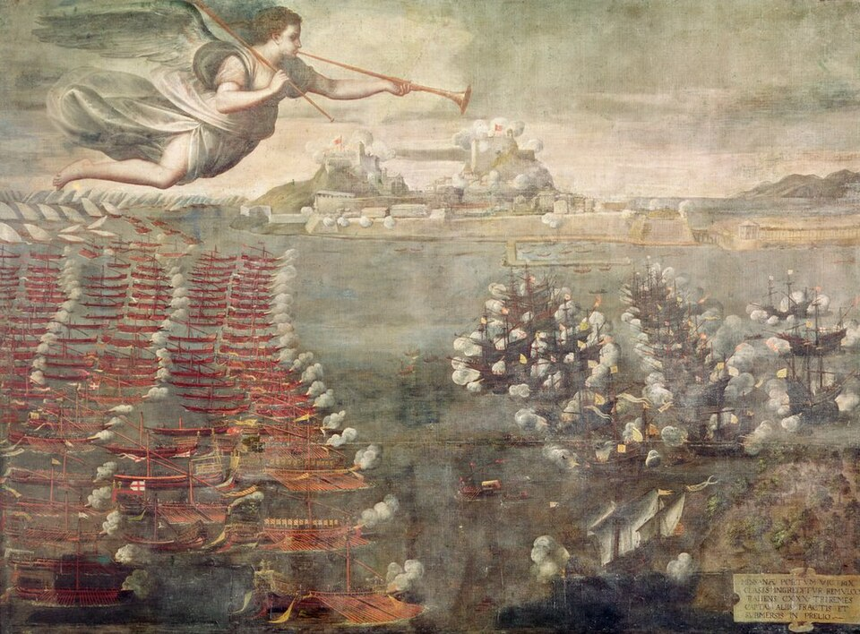

Don Juan de Austria deshace la armada del Turco en el golfo de Lepanto
La armada de la Liga Santa ha vencido hoy a la otomana en la mayor batalla naval que recuerden estos mares. Decenas de galeras turcas han sido apresadas o echadas a pique, y miles de cautivos cristianos han quedado libres de los remos.

Amaneció el día con las dos armadas a la vista, a la boca del golfo de Lepanto: la de la Liga Santa desplegada en cuatro cuerpos, la del Turco abierta en media luna, tantas velas juntas que parecían ciudades sobre el agua. Hacia el mediodía las galeazas venecianas rompieron a cañonazos el orden enemigo, y luego fue el chocar de los espolones, el humo, la arcabucería y el pelear de borda a borda, tan espeso que en muchos trechos no se veía la mar, sino un solo tablado de naves trabadas. Al caer la tarde, la media luna estaba deshecha y el agua cubierta de despojos.
Manda la armada cristiana don Juan de Austria, hermano del rey don Felipe, mozo de veinticuatro años que hoy se ha hecho nombre para siglos. A su lado pelearon Marco Antonio Colonna, general del Papa, y el anciano Sebastián Veniero, general de Venecia, con don Álvaro de Bazán acudiendo con la reserva adonde más apretaba el peligro. La Real de don Juan embistió a la Sultana de Alí Bajá, general del Turco, y tras porfiado combate la rindió; el propio Alí Bajá quedó muerto en la pelea. Se cuentan por decenas las galeras apresadas y por muchos miles los turcos muertos o cautivos.
Esta jornada venía madurando desde la pérdida de Chipre, cuando el Turco tomó Nicosia y luego Famagusta, cuya guarnición fue pasada a cuchillo contra lo capitulado. El Papa Pío V, que no descansó hasta juntar lo que parecía imposible, ligó en una santa Liga las armas de España, de Venecia y de la Iglesia, tantas veces desavenidas entre sí. La armada se congregó en Mesina y salió a buscar al enemigo en sus propias aguas, cosa que hace años nadie osaba. El Turco, señor de tantas costas, aceptó la batalla confiado en su número, y su confianza yace ahora en el fondo del golfo.
Lo que no cabe en las cifras lo ponían esta tarde los rostros: de las crujías de las galeras apresadas salían a millares los cautivos cristianos, encadenados años al remo, llorando y abrazando a sus libertadores, y ellos solos bastarían para justificar la jornada. La sangre ha corrido pareja: la Liga cuenta sus muertos por miles y los heridos llenan las cubiertas. Entre ellos se cita a un soldado joven llamado Miguel de Cervantes, que peleó con calentura en la galera Marquesa y sale de la batalla con dos arcabuzazos en el pecho y la mano izquierda estropeada.
No recuerdan estos mares batalla naval de tal grandeza, ni la cristiandad victoria que tanto le devuelva el ánimo, porque desde hacía años se tenía al Turco por invencible sobre el agua y hoy se ha visto que no lo es. Con todo, conviene templar el júbilo con juicio: el imperio del Turco es vasto, sus atarazanas son hondas y los vencidos de hoy pueden volver a armar galeras antes de lo que se piensa. Lo ganado en Lepanto es la honra, los cautivos libres y el desengaño del miedo. Cómo se administre esta victoria, eso lo dirán los príncipes y el tiempo.